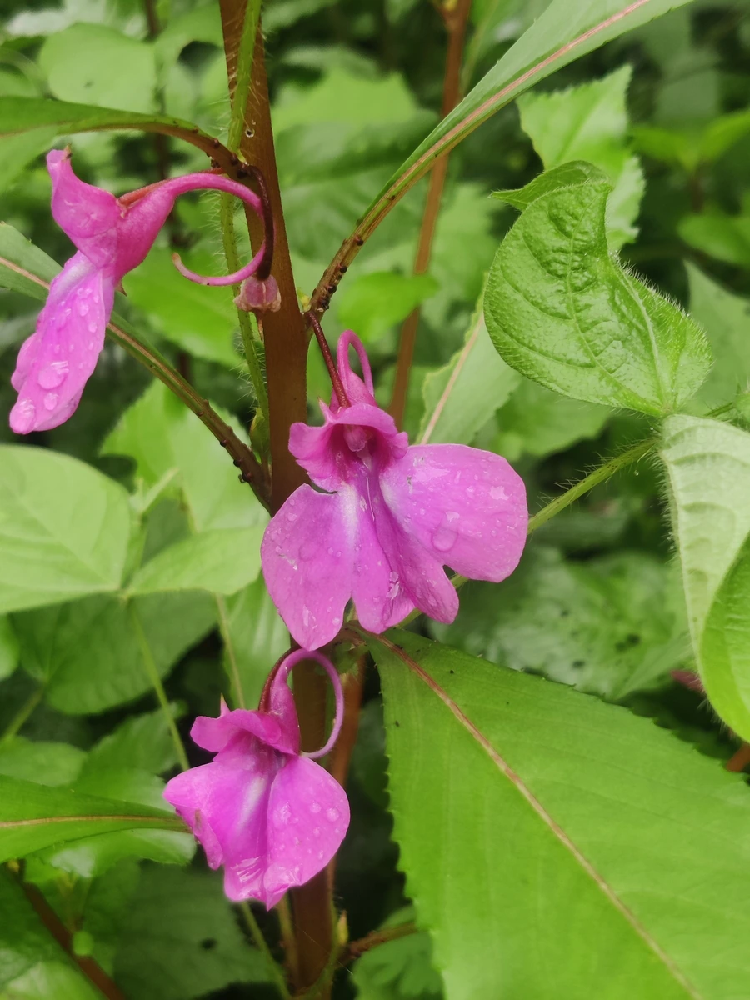

花卉与草本 · 植物界
凤仙花 Impatiens balsamina

凤仙花科一年生草本，花瓣捣碎可染指甲，果实成熟后一触即裂，是常见的庭院花草，原产印度与东南亚。
- 分类
- 门被子植物门纲木兰纲目杜鹃花目科凤仙花科属凤仙花属
- 栖息环境
- 印度与东南亚的温暖湿润林缘，喜光、喜湿、不耐寒
- 地理分布
- 原产印度与东南亚，中国各地庭院广泛栽培，常见自播种群
- 保护级别
- 暂无评估
物种志
凤仙花为凤仙花科凤仙花属一年生草本，株高 40–100 厘米，茎肉质、直立，节部膨大。叶片互生，披针形，边缘有锯齿，叶柄两侧有腺体。花单生或数朵簇生于叶腋，有单瓣和重瓣，颜色有红、粉、白、紫等，花期 6–8 月；果实为椭圆形蒴果，成熟后轻轻一碰就会弹裂，种子弹出。
凤仙花原产印度、东南亚一带，中国栽培历史悠久，喜温暖、阳光充足和湿润的环境，不耐寒，常自播繁殖。花瓣中含有天然色素，民间常把红色花瓣捣碎加明矾，用来染指甲，因此得名“指甲花”；茎、根和种子均可入药，种子即中药“急性子”，有活血化瘀之效。它的果实弹裂传播种子的特性十分有趣，英文属名意为“没有耐心的”，正指这种一触即裂的果实。
形态与习性
- 株高40–100 厘米，茎肉质，节部膨大
- 花期6–8 月，单瓣或重瓣
- 果期8–10 月，蒴果一触即裂
- 光照喜充足阳光，也耐半阴
- 水分喜湿润，忌干旱
- 土壤疏松肥沃、排水良好的壤土
- 繁殖以播种为主，自播能力强
- 主要用途庭院观赏、花瓣染指甲、全草入药
趣味知识
- 凤仙花果实成熟后轻轻一碰就会弹裂，把种子弹出很远。
- 红色花瓣捣碎加明矾可染指甲，因此民间称它“指甲花”。
- 英文属名 Impatiens 意为“没有耐心的”，形容果实一触即裂的特性。
- 它的种子是中药“急性子”，茎和根也可入药。